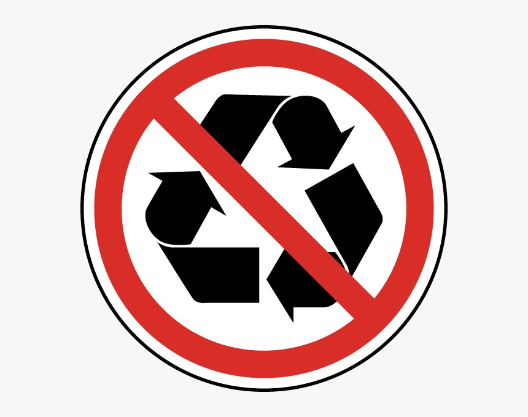
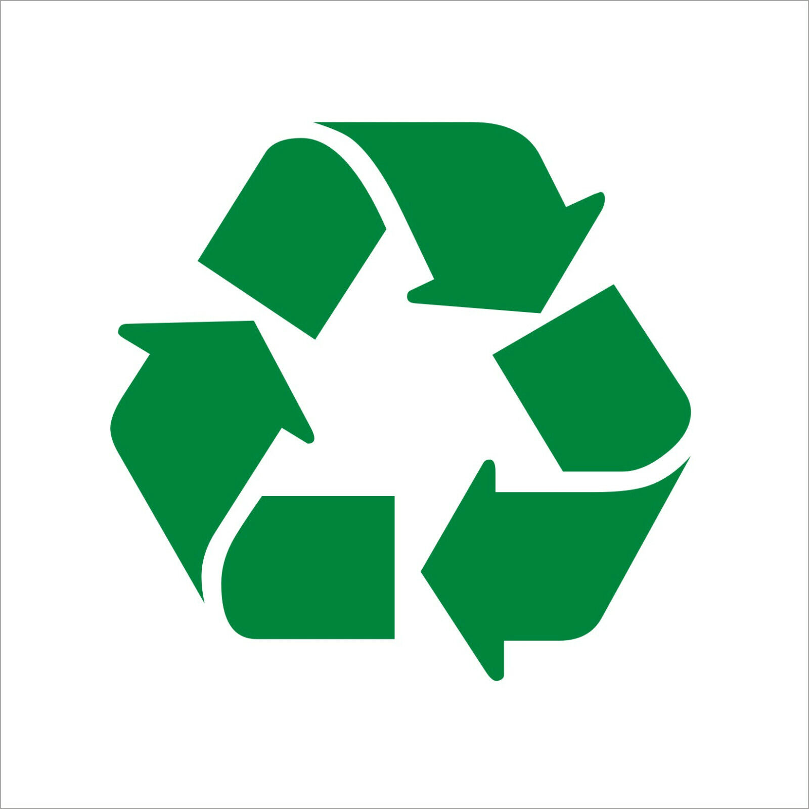

An Exploration of Waste and Meaning
Trash is everywhere, yet it is often invisible. It disappears from our lives the moment we discard it, out of sight and out of mind. But what if we looked closer? What if, instead of ignoring the things we throw away, we paid attention to them, examined their histories, and questioned what they reveal about our habits, our culture, and our values? This project is an attempt to do just that—an exploration of waste, an investigation into what our trash can teach us.
This week’s trash collection provided interesting insights into my daily habits, particularly how much of my waste comes from routine activities rather than impulse decisions. Compared to last week, when most of my discarded items were random things I found lying around my room, this week’s waste was closely tied to specific moments throughout my day. The most surprising realization was how many essential items reached the end of their life span when I needed them the most—whether it was a hanger breaking right before an important interview, a pen running out of ink mid-sentence, or batteries failing just as I was about to unwind.
Another pattern I noticed was the mix of planned waste versus unexpected waste. Some items, like my engineering notebook, had served their purpose and were naturally ready for disposal. Others, like the empty tissue box, caught me off guard and forced me to improvise. This week made me reflect on how little I think about replacing items before they run out or break—and how small changes in planning could make my life a little more convenient.
Looking at this week’s trash, I noticed that many of the things I threw away were either completely used up or failed unexpectedly. The biggest takeaway was that a little planning—checking my pen ink before an interview, restocking essential supplies before they run out—could save me from minor inconveniences. I also realized that a lot of my waste comes from single-use packaging, something I want to be more mindful of moving forward.

The hanger takes the spotlight as this week’s "Item of the Week" because it played a critical role in my Honeywell interview preparation. Unfortunately, its structural integrity gave out at the worst possible moment.
I bought this plastic hanger a year ago as part of a set, primarily to keep my professional clothes wrinkle-free. It wasn’t expensive, but it served its purpose—until now. I used it to hold my suit for my interview, ensuring I looked polished and ready. However, just before I put my suit on, the hanger snapped.
This got me thinking about the life cycle of plastic hangers. They’re often mass-produced from non-biodegradable materials, which means they end up in landfills after breaking. Some retailers offer recycling programs, but they are rare. This makes me reconsider purchasing plastic hangers in the future—I may opt for sturdier wooden or metal alternatives that last longer and reduce waste.
Plastic waste is a growing problem, and small changes, like choosing more durable materials, can help minimize unnecessary waste.
In addition to the environmental impact, the hanger's failure also highlighted the importance of having reliable tools and items, especially during critical moments. Investing in quality products can save time, reduce stress, and ultimately be more cost-effective in the long run.
Reflecting on this experience, I am now more mindful of the items I purchase and their potential longevity. This small incident has inspired me to make more sustainable choices and to be better prepared for future important events.
Understanding the different types of trash can help us manage waste more effectively. Here are the main categories:
| Type |
|---|
| Organic |
| Recyclable |
| Non-Recyclable |
| Hazardous |


| Item | Description | Category |
|---|---|---|
| Hanger | Used to hold clothes, but it broke. |  |
| Pen | Ran out of ink during the interview. | |
| Batteries | Corroded and unusable. | |
| Shampoo Bottle | Empty after use. |  |
| Granola Bar Wrapper | Empty after eating the snack. | |
| Engineering Notebook | Old and full. | |
| Sweet Box | Empty after eating sweets. | |
| Tissue Box | Empty after use. | |
| Kitchen Tissue | Used instead of a kleenex. |
Recyclable | Non-Recyclable | Hazardous
| Item | Weight | Cost |
|---|---|---|
| Engineering Notebook | 500g | $15 |
| Shampoo Bottle | 250g | $10 |
| Sweet Box | 200g | $8 |
| Tissue Box | 150g | $5 |
| Hanger | 100g | $3 |
| Batteries | 50g | $2 |
| Pen | 20g | $1 |
| Granola Bar Wrapper | 10g | $0.50 |
| Kitchen Tissue | 0.5g | $0.10 |
This project has been an eye-opening journey into the world of waste. By examining the items I discard each week, I've gained a deeper understanding of my consumption habits and the impact they have on the environment. I hope this exploration encourages others to be more mindful of their waste and to seek out sustainable alternatives in their daily lives.

My name is Vick Maturu, and I am passionate about sustainability and waste management. Through this project, I aim to shed light on the often-overlooked stories behind the items we discard. By documenting my weekly trash, I hope to inspire others to reflect on their consumption habits and consider more sustainable alternatives.
When I'm not analyzing my trash, I enjoy hiking, reading, and exploring new ways to reduce my environmental footprint. Feel free to connect with me on LinkedIn or follow my journey on Instagram.